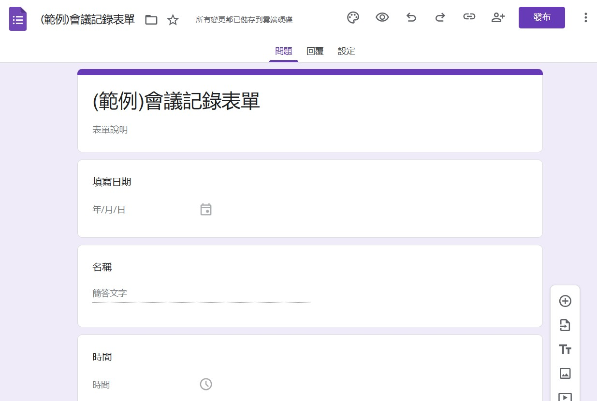
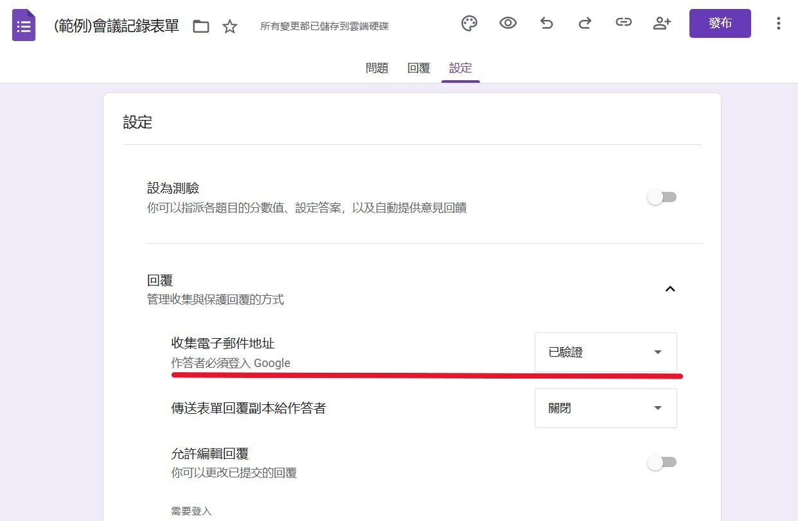
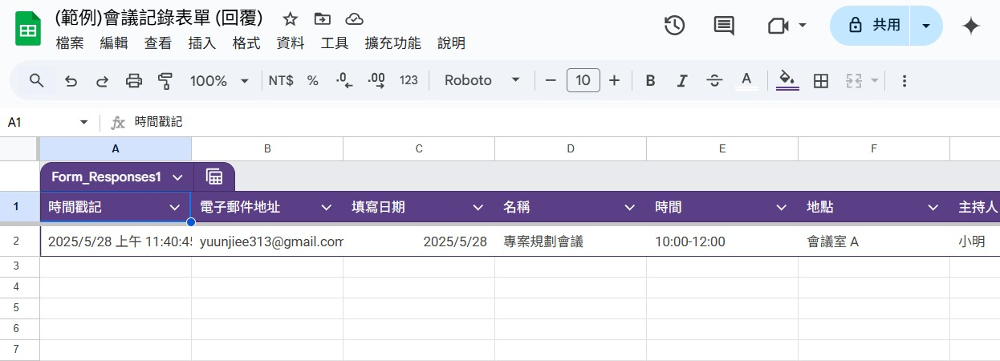
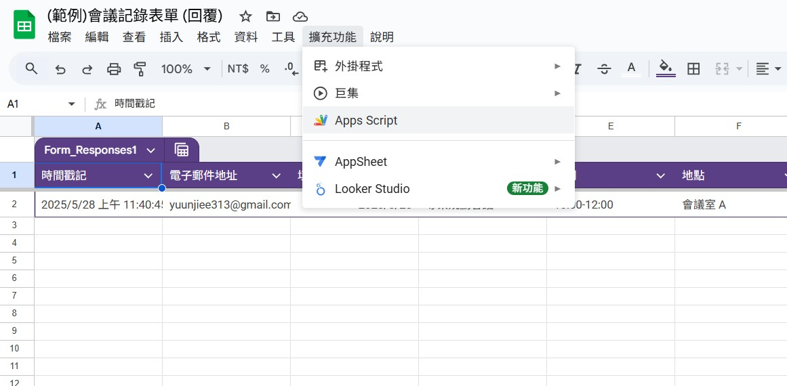
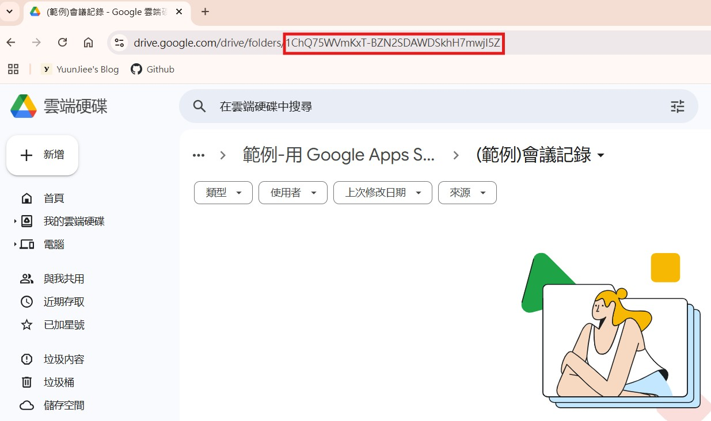
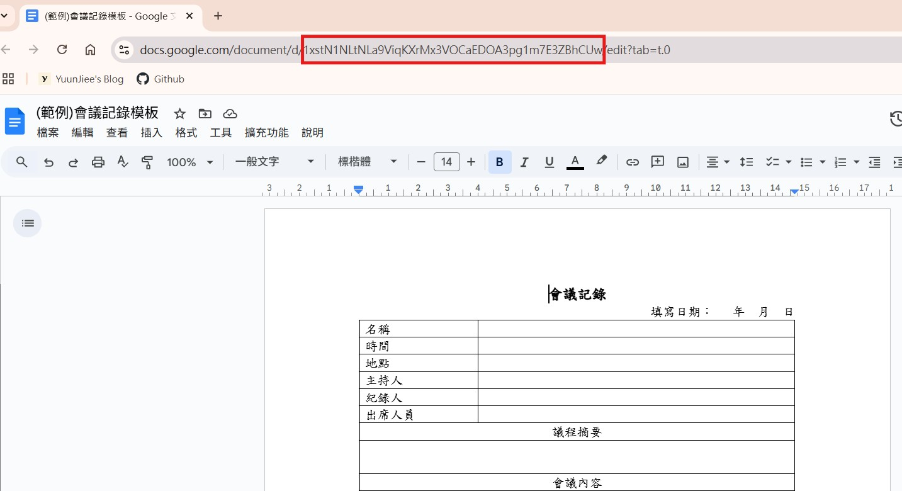

【教學】用 Google Apps Script 讓表單資料自動轉成文件
在工作或學校專案中，偶爾需要把 Google 表單的回覆內容製作成正式文件，例如報告、申請書或工作紀錄。每次手動複製貼上資料，既花時間又容易出錯。
其實，我們可以利用 Google Apps Script（GAS）來自動化這個流程！本文將教你如何用 GAS 一鍵將表單資料產生成文件，節省時間、提高效率！
目錄
1. 確認文件內容
請先將要填寫的文件格式整理好，當作後續自動化的「範本」。建議先使用 Word 來編輯排版，因為 Google 文件在表格編輯的彈性，可能不如 Word 方便。
完成後，再將 Word 文件上傳到 Google 雲端硬碟，並轉換成 Google 文件格式，作為我們的自動化範本。
下面這張圖，可以看見如何 Word 文件轉成 Google 文件：
2. 製作 Google 表單
根據你剛剛整理好的文件內容，開始設計一份 Google 表單。這份表單的每筆回覆將會成為產生文件的資料來源。
在設計表單時，請對應文件中的每個欄位，設定合適的表單問題類型。
下圖是 Google 表單編輯時的示意畫面： 
以下是常見問題類型與應用範例：
- 簡答題：會議名稱、填寫人等
- 詳答題：會議摘要、內容說明等
- 單選題：是否需要後續追蹤（是/否）
- 多選題：後續追蹤項目（可多選）
- 日期題：會議日期、截止日期等
建議在「設定」分頁中，開啟「收集電子郵件地址」，方便後續追蹤或聯絡填表人：

完成表單後，接著到「回覆」分頁，點擊「連接至試算表」以建立回覆試算表。
現在，你就可以先自行填寫一次，送出後即可在試算表中看到結果，請確認確保資料結構正確。
下圖是回覆試算表的範例畫面： 
3. 撰寫 Apps Script 程式碼
在回覆試算表中，點擊「擴充功能」，再按下「Apps Script」，就能開啟 Google Apps Script 的開發環境。
下圖為Apps Scripts開啟位置： 
進入後，建議先將專案重新命名（例如「會議記錄文件生成器」），接下來就可以開始撰寫自動化的程式碼了！
3-1 確認輸出位置、取得ID
到 Google 雲端硬碟中，找到你想要放置自動產生文件的資料夾，也可以直接新建一個資料夾。
接著，複製該資料夾的 ID。這個 ID 通常會顯示在瀏覽器網址列中，位於 folders/ 後面，如下圖所示：

同樣的方式，打開你準備好的 Google 文件模板，並從網址中找到該文件的 ID，位置在 d/ 和 /edit 中間，如下圖所示：

待續…